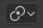

Median Point¶
Reference
| Mode: | Object Mode and Edit Mode |
|---|---|
| Header: |  |
| Hotkey: | Ctrl-Comma |
The Median Point can be considered to be broadly similar to the concept of Center of Gravity (COG). If we assume that every element (object, face, vertex, etc.) of the selection has the same mass, the median point would sit at the point of equilibrium for the selection (the COG).
In Object Mode¶
In Object Mode, Blender only considers the Object origins when determining the median point. This can lead to some counter-intuitive results. In the Fig. Median points in Object Mode. below, you can see that the median point is between the Object origins and can be nowhere near the Objects’ mesh (geometric center).

Median points in Object Mode.
In Edit Mode¶
In Edit Mode, the median point is determined via the part of the selection that has the most elements. For example, in the Fig. Median points in Edit Mode., when there are two cubes with an equal number of vertices, the median point lies directly between the two cubes. However, if we subdivide one cube multiple times so that it has many more vertices, you can see that the median point has shifted to the region with the most vertices.

Median points in Edit Mode.